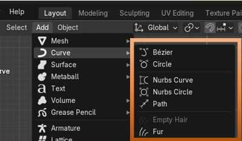

~2 Bezier Curves~
9/1/2025
You will see the menu to access Curve sitting just under Mesh in the Add dropdown.

You do have access to other types of curves through the Curve Menu, but for a few tutorials, we will be focusing on the Bezier curve. This is the type of curve, which is most commonly used by Graphic Designers and 3D modelers to create their wavy masterpieces.

When you first bring this curve into Object mode, you will see that it looks like this. This is looking down on the curve from top view. From front view you really won’t see much then just a straight line lying on the floor of the grid.